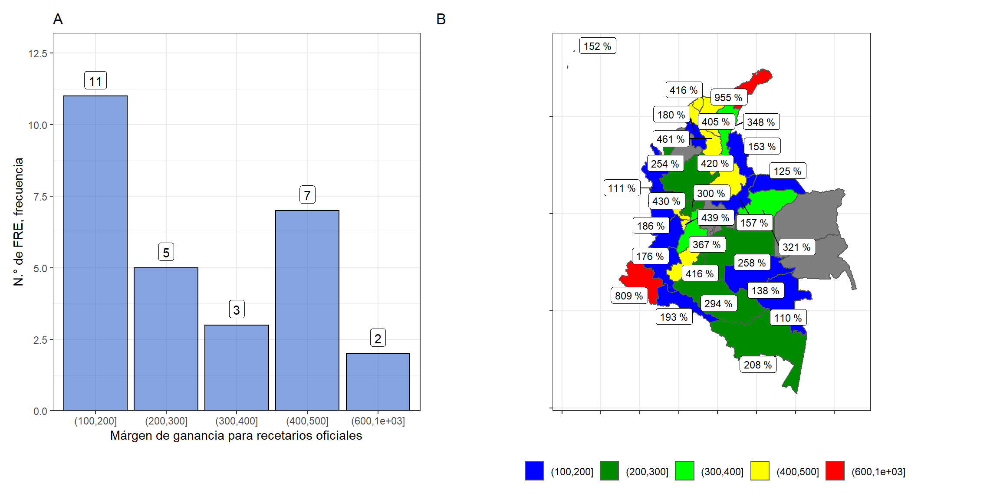

5.2 Costos de recetarios
Dentro del estudio de costos realizado se realizó el comparativo entre el costo de compra del recetario contra su precio de venta. Así pues, se determinó que dentro del territorio el costo de los recetarios ronda entre los 10.000 COP y los 20.000 COP, con territorios como Valle del Cauca y Casanare, en donde dicho costo se aproxima a 30.000 COP. Algunos departamentos quedan fuera de la escala de medición (Figura 5.5), dada sus particularidades en la contratación, puesto que se encargan del proceso de licitación y contratación de recetarios, únicamente realizan estudios de necesidad que son enviados al ente encargado de concretar la contratación, en mucho casos, la gobernación departamental.
Figura 5.5: Comparativo de costo vs precio de recetarios por departamento

Por otro lado el precio de venta de los recetarios tiende a rondar los 30.000 COP, ya que en algunos FRE por acto administrativo se ha establecido la tarifa del recetario con base en el salario mínimo diario legal vigente. Así mismo, se observa correlación entre los departamentos con costo de recetario más alto y precio de venta mayor, como se da en Valle del Cauca, Bolívar y Casanare.
Ahora bien, el margen de ganancias que deja la venta de recetarios, se observa en la Figura 5.6, en donde se puede establecer que con mayor frecuencia los entes territoriales obtienen entre 100 y 200% de ganancia. Por otro lado los FRE de La Guajira y Nariño, poseen ganancias entre 800 y 900% en la venta de sus recetarios oficiales.
Figura 5.6: Márgen de ganancia por recetario
Los amplios márgenes de ganancia y las proporciones distintas entre unos FRE y otros, se podrían relacionar con la cantidad de medidas de seguridad del recetario, la facilidad de acceso del departamento, el número de prescripciones, el tipo de licitación o la cantidad de empresas oferentes en los concursos de licitación de recetarios. En la Figura 5.7 se ilustra algunas de las variantes mencionadas en donde se logran establecer tendencias como que el número de prescripciones en general, elevan el costo de los recetarios. Pese a ello y contrario a lo que se podría suponer, la disposición estadística indica que a mayor número de medidas de seguridad en el recetario, es menor su precio. Esto podría deberse a la forma en que se adjudican los contratos y a la facilidad de elaboración en departamentos con capacidad tecnológica adecuada y diferentes oferentes en el concurso de contratación.
Figura 5.7: Gráficos de dependencia parcial - Modelo de Costos

De igual forma, el tipo de contratación que se concreta con las empresas fabricante de los recetarios es una variable que influye en el costo de los recetarios, así pues, las modalidades de contratacion por licitacion publica, minima cuantia y selección abreviada tienden a disminuir el costo del recetario, sin embargo, los FRE que concretaron órdenes de compra de recetarios por mínima cuantía, tienden a presentar precios mayores de adquisición, con costo alrededor de los 10.000 COP y 15.000 COP. Por otro lado, se evidencia que los entes territoriales que optaron por la modalidad de contratación directa, tienden a ser los recetarios más costosos en relación con las demás, con costos superiores a los 15.000 COP por recetario en promedio, factor esperado ya que al no haber competencia entre empresas oferentes, quien posee el monopolio de fabricación es libre de disponer los precios de venta a las entidades territoriales.
Finalmente se pude concluir el precio por prescripción de los recetarios oficiales circulantes a nivel nacional como variante ponderadora el precio de venta y la cantidad de prescripciones por recetario, en donde se puede evidenciar la tendencia de los FRE hacia 250 COP a 500 COP por prescripción (Figura 5.8).
Figura 5.8: Precio de venta de recetario por prescripción

El valor por prescripción más alto a nivel nacional se presenta en el departamento de Casanare; pese a que el recetario cuenta con 50 prescripciones como la mayoría de los FRE, su precio de venta es de 76.500 COP, el más alto del país, y del que no se tiene un acto administrativo donde se establezca su valor. Además de ello, cuenta con 3 medidas de seguridad, lo que consolida la hipótesis que se observa a nivel nacional que indica que a menor número de medidas de seguridad, mayor es el costo del recetario.